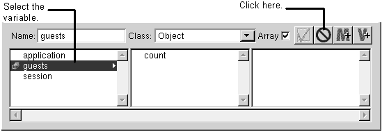

Table of Contents
Table of Contents
 Previous Section
Previous Section
Table of Contents
Previous Section
Select the variable in the object browser.
Press the Delete button in the top part of the object browser.
The variable is removed from the script file as well as the object browser.

Always use the object browser to delete variables. For variables, WebObjects Builder always assumes the list in the object browser is correct and updates the script to match. It does not go the other direction: If you delete a variable from the script window, WebObjects Builder tells you there are variables in the object browser that are not declared in the script and asks if it should add them.
Although you can access application and session variables from a component window's object browser, you can't delete them there. You must delete application and session variables in the application window.
 Next Section
Next Section